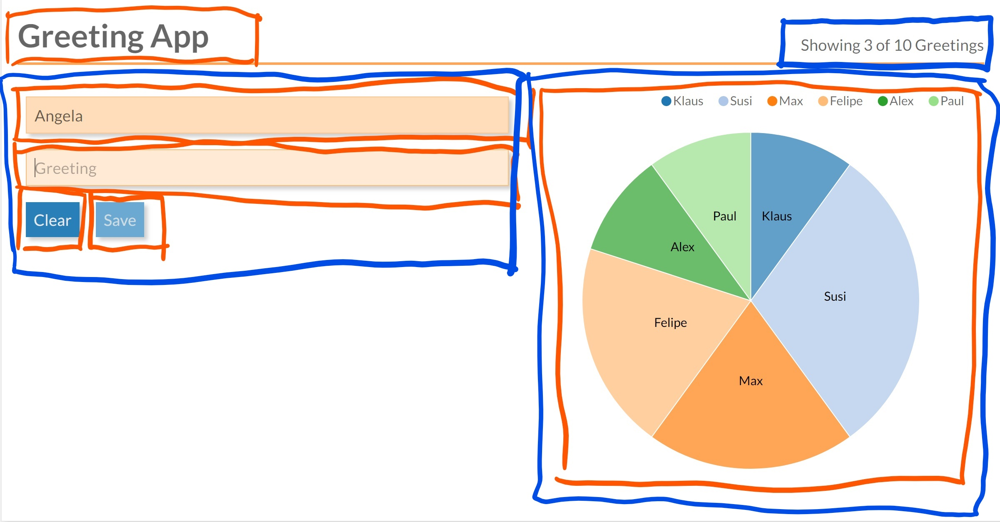
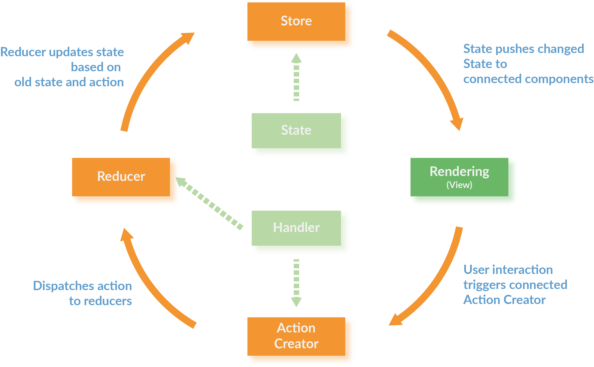

Overview of current (JavaScript) Frontend Architectures
Slides: TODO

@wycats : https://twitter.com/wycats/status/930463710941872128
Classic Web Applications

- Browser sends HTTP Request
- Content is rendered on the Server
- HTML is sent back to the Browser
- Browser only shows the page to the user
- Each interaction repeats this round-trip
- Frequent page load means severe limitation to UX
jquery / AJAX
Add some adhoc JavaScript snippet when UI needs to be responsive

- some renedering in the Browser, some on the server
- architecturally a PITA
- starts as a solution nice, quick and easy to implement
- sooner or later results in unmaintainable code
SPA: Single Page Application
Move your Application to the Client

- only one (single) HTML page that mainly loads JavaScript and CSS
- Server has Data-API (JSON/REST API)
- Server can still hold Business Logic (or it is on the client only)
- allows for Offline and best UX
- same challenges as all rich frontend applications
Single-Page Applications
Components with Templates
A SPA is composed of (business) components:
- Templates describe the UI of the component
- But now:
- Logic is part of the component
- Logic is a "first-class" citizen and no longer a "loose" snippet (like in jQuery)
- Logic is fully executed on the client
- Prominent Frameworks: React, Angular, Vue, and Web Components (Polymer)
Composing an Application from Components
Smart and Dumb Components*
*also known as Mediator Pattern with Web Components / Polymer
Smart Components
- Managing (part of) the application state
- Contain UI logic
- Pass parts of the state as immutable data to subcomponents
- Pass callbacks to subcomponents for interaction
- Mostly domain-specific, not intended to be reusable
Aka Container
Dumb Components
- only for presentation, no logic
- but might contain own ("transient") state
- have no knowledge or dependencies to their surrounding components
- children of Dumb Components are usually other Dumb Components (but there are exceptions)
- reusable
Aka Presentational Component or just Component

Smart Component
@Component({
template: `<sub [greeting]={{greeting}} (onSend)="sent($event)">`
})
export class AppComponent {
// component state
private greeting: string = 'Hiho';
// dependency injection
constructor(private greetingService: GreetingService) {
}
// "Business Logic" delegated to service
sent(greeting) {
this.greeting = this.greetingService.greetBack(greeting);
}
}
Dumb Component
@Component({
selector: 'sub',
template: `
{{greeting}}, World
`,
})
export class SubComponent {
@Input() greeting: string;
// rxjs observer
@Output() onSend = new EventEmitter();
// no business logic, just event emitting
send() {
this.onSend.emit(this.greeting);
}
}
Example

What would be candidates for Smart-/Dumb-Components?
Dumb

Smart
Redux
- Central state management: one store for whole app, like a database
- External state management: extract logic from the (UI-)components
Redux
Architectural guidance
- Uni-directional data flow
- Central and immutable state: store
- Only reducers are allowed to modify state
- State moves from Smart Components to store
- UI logic moves from Smart Components in Action-Creators / Services and Reducer
- Asynchronous code only in Action-Creators / Services or Effects
- Initializing of the app with central action
Redux is independent of UI framework
Bindings exist for popular UI frameworks
- React: http://redux.js.org/docs/basics/UsageWithReact.html
- Angular: https://github.com/ngrx/platform
- Vue: https://github.com/vuejs/vuex
- Web Components (Polymer): Redux is recommended implementation of Global Mediator Pattern, https://twitter.com/DJCordhose/status/899943415353311232 https://tur-nr.github.io/polymer-redux/
Redux extracts responsibility out of Components
Redux Pattern, Resulting Architecture

Reducer
export function counterReducer(state: number = 0, action: Action) {
switch (action.type) {
case INCREMENT:
return state + 1;
case DECREMENT:
return state - 1;
case RESET:
return 0;
default:
return state;
}
}
import { NgModule } from '@angular/core';
import { StoreModule } from '@ngrx/store';
import { counterReducer } from './counter';
@NgModule({
imports: [StoreModule.forRoot({ count: counterReducer })],
})
export class AppModule {}
Connection to Store
interface AppState {
count: number;
}
@Component({
template: `Current Count: {{ count$ | async }}`
})
export class CounterComponent {
count$: Observable<number>;
constructor(private store: Store<AppState>) {
this.count$ = store.pipe(select('count'));
}
reset() {
this.store.dispatch({ type: RESET });
}
}
Is anyone really using this?
 Microsoft Outlook, Twitter, Apple, XING and many others use React and Redux
Microsoft Outlook, Twitter, Apple, XING and many others use React and Redux
Wrap Up
Overview of current (JavaScript) Frontend Architectures
- SPAs are just like any rich frontend application
- Which framework you use does not matter too much
- All make you compose your application from components
- Composing your Application into Smart and Dumb Components
- Redux as Data Layer
- for large applications with many dependencies between parts / components
- provides architectural guidance where which part of the application goes